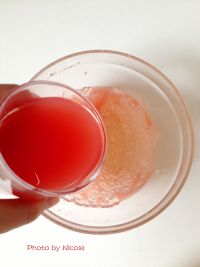

<style>
/* custom */
section[data-id="7"] {
    /*background-color: #3498db;*/
}
section[data-id="7"] .box1 {
    left: 71px; top: 248px;
}
section[data-id="7"] .box2 {
    left: 25px; top: 40px;
}
section[data-id="7"] .box3 {
    left: 22px; top: 95px;
}
</style>

<!-- 第七屏 -->
<voice-pig id="voice-7" text="part7:将西瓜汁倒入西米，搅拌均匀" onplay="" onplaying="" onstop="window.goNext()"></voice-pig>
<section class="page">
    <div class="box1 animated slideInDown">
        
    </div>
    <div class="box2 animated bounceInDown">
        <i>7</i>
    </div>
    <div class="box3 animated bounceInDown">
        <p>将西瓜汁倒入西米，搅拌均匀</p>
    </div>
</section>
